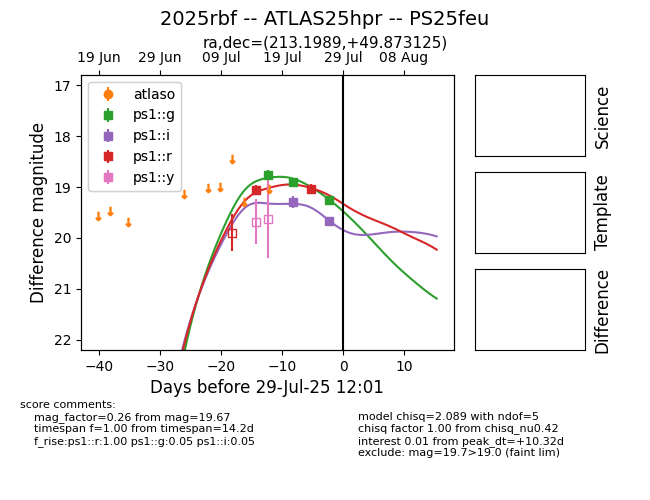

Target 2025rbf at 2025-07-29 12:01, see:
TNS: wis-tns.org/object/2025rbf
YSE: ziggy.ucolick.org/yse/transient_detail/2025rbf
alt names
2025rbf (yse,tns)
ATLAS25hpr (atlas)
PS25feu (panstarrs)
coordinates:
equatorial (ra, dec) = (213.1989,+49.87313)
galactic (l, b) = (93.9816,+62.43332)
photometry
last ps1::g=19.25, ps1::i=19.67, ps1::r=19.04
3 ps1::g, 2 ps1::i, 2 ps1::r detections
